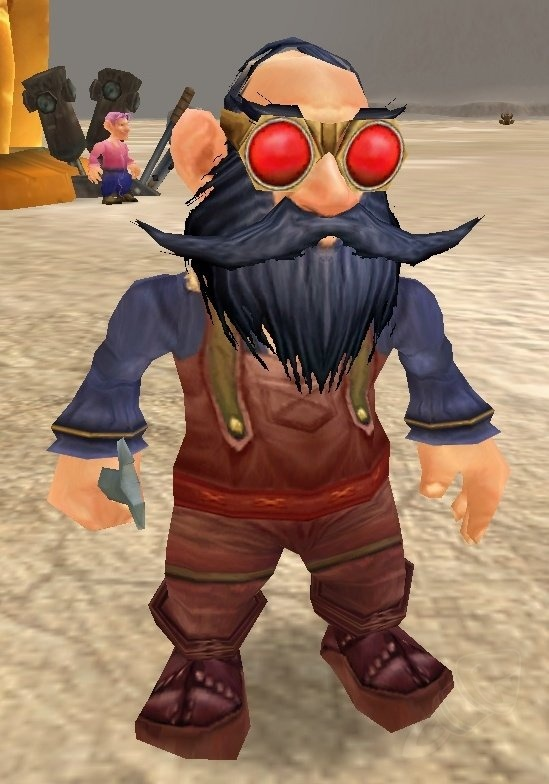
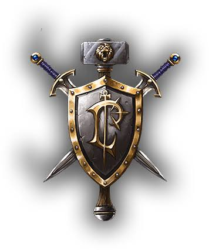
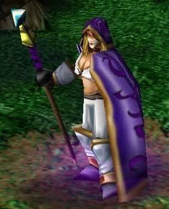
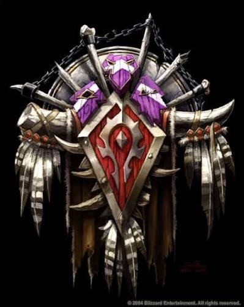
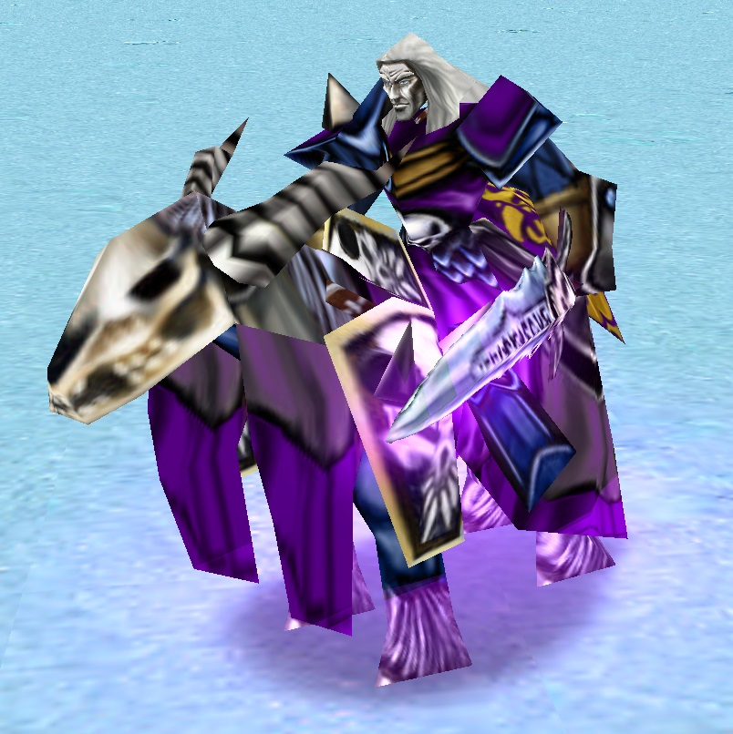
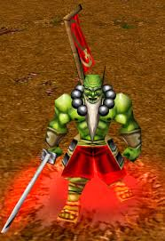

gnomo
Ciudad o asentamiento: Dun Morogh
Profesion de ejemplo: Ingenieria

-Explora las razas de la Alianza y la Horda

Ciudad o asentamiento: Dun Morogh
Profesion de ejemplo: Ingenieria

Ciudad o asentamiento: Ventormenta
Profesion de ejemplo: Herrería


Ciudad o asentamiento: Entrañas
Profesion de ejemplo: Alquimia

Ciudad o asentamiento: Orgrimar
Profesion de ejemplo: Alquimia
